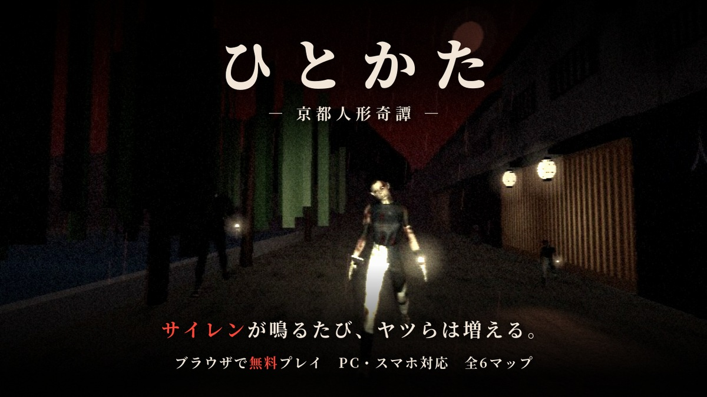

ひとかた —京都人形奇譚—Hitokata: A Kyoto Doll Tale
舞台は夜の京都。提灯の灯る路地や寺、古い施設をさまよい、散らばった日本人形を集めて脱出します。サイレンが鳴るたびに、追ってくるヤツらは増えていきます。Night falls on Kyoto. Wander lantern-lit alleys, temples and old buildings, collecting scattered Japanese dolls to escape. Every time the siren sounds, more of them come after you.
遊び方How to play
- 夜の路地や寺、施設を探索して5体の日本人形を集めるExplore the night streets, temples and buildings to collect five dolls
- 還り人の懐中電灯の光に入らない。見つかったら物置に隠れてやり過ごすStay out of the Returned's flashlight beams, and hide in a shed if they spot you
- サイレンが鳴ったら要注意。全部集めたら出口へWatch out when the siren sounds, and head for the exit once you have them all
見どころHighlights
- 京都の路地・寺・施設に、伏見稲荷の千本鳥居・嵐山の竹林・清水寺を加えた全11マップ。祇園と人形寺の本堂は、写真のような質感の「超リアル」版でも遊べますEleven maps — Kyoto alleys, temples and old buildings, plus Fushimi Inari, the Arashiyama bamboo grove and Kiyomizu-dera. Gion and the doll temple also come in photo-realistic “Ultra Real” versions
- サイレンのたびに敵が増える緊張感More enemies with every siren
- PS2風のざらついたグラフィックGrainy PS2-style graphics
- ブラウザで無料、PC・スマホ対応。ヘッドホン推奨Free in your browser on PC and mobile. Headphones recommended
攻略のコツTips
還り人は懐中電灯の光で獲物を探します。光の中に入らなければ、すぐ近くにいても気づかれにくくなります。角を曲がる前に、光が近づいていないか確かめるクセをつけましょう。The Returned search for prey with their flashlights. Stay out of the beam and they will rarely notice you, even up close. Get into the habit of checking for approaching light before you turn a corner.
見つかってしまったら、物置に飛び込んでやり過ごすのが基本です。マップを歩きながら「いざというときはここ」という場所を頭に入れておくと、生き残れる確率が大きく上がります。If you are spotted, dive into a shed and wait it out. Memorising a few hiding spots as you explore makes a huge difference to your chances of survival.
サイレンが鳴るたびに、還り人の数は増えていきます。人形を集めるほど町は危険になるので、序盤のうちに遠くの人形を取りに行っておくのがおすすめです。Every siren brings more of the Returned. The town gets more dangerous the more dolls you collect, so it pays to grab the far-away dolls early.
足音や環境音が、見えない場所の気配を教えてくれます。ヘッドホンで遊ぶと、怖さも攻略のしやすさも一段上がります。Footsteps and ambient sounds warn you of what you cannot see. Play with headphones for both more fear and an easier time.
京都の名所を歩くマップWalking through Kyoto landmarks
マップは全部で11種類あります。朱色の鳥居が延々と続く伏見稲荷の千本鳥居、風に揺れる嵐山の竹林、懸造りの舞台がそびえる清水寺など、実在の名所をモチーフにした場所を、真夜中にひとりで歩くことになります。昼間なら観光客でにぎわう場所が静まり返っている、その違和感こそがこのゲームの怖さです。There are eleven maps in total. You walk alone at midnight through places inspired by real landmarks: the endless vermilion gates of Fushimi Inari, the swaying bamboo of Arashiyama, the towering wooden stage of Kiyomizu-dera. Places that bustle with tourists by day stand silent, and that wrongness is where the fear comes from.
祇園と人形寺の本堂には、写真のような質感で作り込んだ「超リアル」版も用意しました。祇園は赤い空と血の雨に包まれた、ほかのマップとはまったく違う雰囲気になっています。Gion and the main hall of the doll temple also have photo-realistic “Ultra Real” versions. Gion is wrapped in a red sky and blood rain, with an atmosphere unlike any other map.
制作についてAbout the making
ひとかたが生まれたきっかけは、いつもテストプレイを手伝ってくれている先輩の友人の「和製ホラーゲームを作ってほしい」という一言でした。海外のホラーゲームにはない、日本ならではの怖さとは何か。考えた末にたどり着いたのが、日本人形と夜の京都という組み合わせです。昼間はたくさんの人でにぎわう名所が、真夜中には誰もいない。その静けさと違和感を、ゲームの中で味わってもらえるように作りました。テスターの意見を取り入れながら、マップを少しずつ増やしています。Hitokata began when a friend of my senpai, who always helps me playtest, asked me to make a Japanese horror game. What kind of fear is uniquely Japanese, something foreign horror games do not have? The answer I arrived at was Japanese dolls and Kyoto at night. Famous spots crowded by day are empty at midnight, and I built the game so you can feel that silence and unease. I keep adding maps based on feedback from my testers.